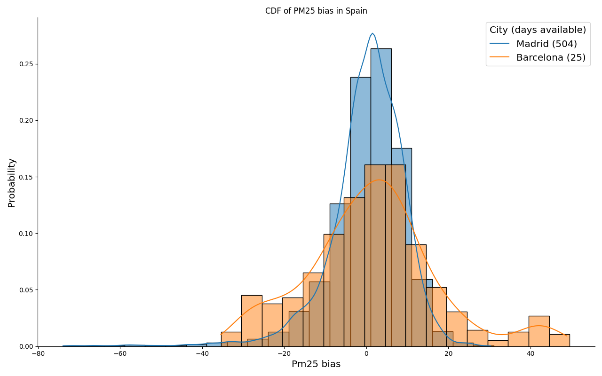

AQ-BiasCorrection
Bias correction of CAMS model forecasts for air quality variables by using in-situ observations. The bias correction algorithm will mainly be based on ML / DL techniques.

:book: Table of Contents
Table of Contents

:blue_book: About the project
Bias correction of CAMS model forecasts for air quality variables by using in-situ observations. The bias correction algorithm will mainly be based on machine-learning / deep-learning techniques.
:pushpin: Prerequisites
:bookmark: Milestones
This section is intended to propose a breakdown of the work in a set of weekly milestones, detailing as much as possible the features studied at each level (this schema could be redesigned during the development stage due to technical problems, commented on following sections).
• Milestone 1 (Week 1): Download of data and analysis of data quality.
• Milestone 2 (Week 3): Preprocess of model predictions, observations and other variables of interest.
• Milestone 3 (Week 6): Initial research about bias distribution. The spatial and temporal distribution will be studied as well as the importance of the variables of interest to differentiate between stations with similar biases.
• Milestone 4 (Week 7): Specification of the model architecture, the selected features and the hyperparameters to tune.
• Milestone 5 (Week 8): Hyperparameter tuning and model training.
• Milestone 6 (Week 11): Validation of trained model and extraction of main insights regarding model ability to correct the bias at each station. A study of the distribution of the errors in the bias prediction.
• Milestone 7 (Week 14): Improvements on model architecture or features selected based on the insights obtained during the validation stage.
• Milestone 8 (Week 16): Final analysis of the model predictions with the proposed improvements.
• Milestone 9 (Week 17): Final release.

:1234: Data
The data used in this project comes from two different sources. Firstly, the observations from OpenAQ stations have been downloaded for the three variables of interest at a set of interesting locations / cities
extraction_openaq pm25 -l data/external/stations.csv -o data/interim
The stations.csv file must follow the structure:
,id,city,country,latitude,longitude,timezone,elevation
For instance:
,id,city,country,latitude,longitude,timezone,elevation
0,AE001,Dubai,United Arab Emirates,25.0657,55.17128,Asia/Dubai,2
1,AE002,Abu Dhabi,United Arab Emirates,24.46667,54.36667,Asia/Dubai,3
In case that there are no available stations in a radius of 100 kilometeres to the location of interest in the time range selected by the user (default: 1-6-2019 to 31-3-2021), no data is downloaded, and an exception is raised with the message:
- 'There is no data in the time range considered for this location of interest'
- 'There are no stations next to this location in OpenAQ for the variable of interest'
In case of successful retrieval, the data for every location / variable is processed and stored in netcdf format:
netcdf pm25_spain_madrid_es001_20190601_20210331 {
dimensions:
time = 8885 ;
station_id = 5 ;
variables:
int64 time(time) ;
time:units = "hours since 2019-06-01 08:00:00" ;
time:calendar = "proleptic_gregorian" ;
double pm25(station_id, time) ;
pm25:_FillValue = NaN ;
string pm25:units = "µg/m³" ;
pm25:standard_name = "pm25" ;
pm25:long_name = "Particulate matter (PM2.5)" ;
pm25:coordinates = "y x _x _y distance" ;
int64 station_id(station_id) ;
station_id:long_name = "station name" ;
station_id:cf_role = "timeseries_id" ;
double x(station_id) ;
x:_FillValue = NaN ;
x:units = "degrees_east" ;
x:long_name = "Longitude" ;
x:standard_name = "longitude" ;
double y(station_id) ;
y:_FillValue = NaN ;
y:units = "degrees_north" ;
y:long_name = "Latitude" ;
y:standard_name = "latitude" ;
double _x ;
_x:_FillValue = NaN ;
_x:units = "degrees_east" ;
_x:long_name = "Longitude of the location of interest" ;
_x:standard_name = "longitude_interest" ;
double _y ;
_y:_FillValue = NaN ;
_y:units = "degrees_north" ;
_y:long_name = "Latitude of the location of interest" ;
_y:standard_name = "latitude_interest" ;
double distance(station_id) ;
distance:_FillValue = NaN ;
distance:units = "km" ;
distance:long_name = "Distance" ;
distance:standard_name = "distance" ;
// global attributes:
:featureType = "timeSeries" ;
:Conventions = "CF-1.4" ;
}
where (_x, _y) are the coordinates of the location of interest as given in the stations.csv file, and (x, y) are the coordinates of the closest stations downloaded from the OpenAQ platform (taking a maximum of 5 stations). In addition, information about the distance from the OpenAQ station to the location of interest is provided in kilometers.
For the five stations shown in the file befores, these distances are:
distance = 1.81559141220802, 2.45376657682221, 2.78449016534016,
3.2173204331241, 3.7871094512231 ;
On the other hand, the forecasts are provided by the CAMS model, which we would like to correct. The files have been processed and offered as part of the project by the ECMWF team. The structure followed was: one file per variable and initialization time step (3 hour frequency).
extraction_cams -i data1/cams_model -intermediary data/interim -l data/external/stations.csv -o data/interim
The processed and stored data follows the consequent pattern:
netcdf cams_spain_madrid_es001_20190601_20210331 {
dimensions:
time = 5360 ;
variables:
int64 time(time) ;
time:long_name = "time" ;
time:units = "hours since 2019-06-01 00:00:00" ;
time:calendar = "proleptic_gregorian" ;
float longitude ;
longitude:_FillValue = NaNf ;
longitude:units = "degrees_east" ;
longitude:long_name = "longitude" ;
float latitude ;
latitude:_FillValue = NaNf ;
latitude:units = "degrees_north" ;
latitude:long_name = "latitude" ;
float blh(time) ;
blh:_FillValue = NaNf ;
blh:units = "m" ;
blh:long_name = "Boundary layer height" ;
blh:coordinates = "latitude station_id longitude" ;
string station_id ;
float d2m(time) ;
d2m:_FillValue = NaNf ;
d2m:units = "K" ;
d2m:long_name = "2 metre dewpoint temperature" ;
d2m:coordinates = "latitude station_id longitude" ;
float dsrp(time) ;
dsrp:_FillValue = NaNf ;
dsrp:units = "J m**-2" ;
dsrp:long_name = "Direct solar radiation" ;
dsrp:coordinates = "latitude station_id longitude" ;
float go3(time) ;
go3:_FillValue = NaNf ;
go3:units = "kg kg**-1" ;
go3:long_name = "GEMS Ozone" ;
go3:coordinates = "longitude latitude" ;
float msl(time) ;
msl:_FillValue = NaNf ;
msl:units = "Pa" ;
msl:long_name = "Mean sea level pressure" ;
msl:standard_name = "air_pressure_at_mean_sea_level" ;
msl:coordinates = "latitude station_id longitude" ;
float no2(time) ;
no2:_FillValue = NaNf ;
no2:units = "kg kg**-1" ;
no2:long_name = "Nitrogen dioxide" ;
no2:coordinates = "longitude latitude" ;
float pm10(time) ;
pm10:_FillValue = NaNf ;
pm10:units = "kg m**-3" ;
pm10:long_name = "Particulate matter d < 10 um" ;
pm10:coordinates = "latitude station_id longitude" ;
float pm2p5(time) ;
pm2p5:_FillValue = NaNf ;
pm2p5:units = "kg m**-3" ;
pm2p5:long_name = "Particulate matter d < 2.5 um" ;
pm2p5:coordinates = "latitude station_id longitude" ;
float so2(time) ;
so2:_FillValue = NaNf ;
so2:units = "kg kg**-1" ;
so2:long_name = "Sulphur dioxide" ;
so2:coordinates = "longitude latitude" ;
float t2m(time) ;
t2m:_FillValue = NaNf ;
t2m:units = "K" ;
t2m:long_name = "2 metre temperature" ;
t2m:coordinates = "latitude station_id longitude" ;
float tcc(time) ;
tcc:_FillValue = NaNf ;
tcc:units = "(0 - 1)" ;
tcc:long_name = "Total cloud cover" ;
tcc:standard_name = "cloud_area_fraction" ;
tcc:coordinates = "latitude station_id longitude" ;
float tp(time) ;
tp:_FillValue = NaNf ;
tp:units = "m" ;
tp:long_name = "Total precipitation" ;
tp:coordinates = "latitude station_id longitude" ;
float u10(time) ;
u10:_FillValue = NaNf ;
u10:units = "m s**-1" ;
u10:long_name = "10 metre U wind component" ;
u10:coordinates = "latitude station_id longitude" ;
float uvb(time) ;
uvb:_FillValue = NaNf ;
uvb:units = "J m**-2" ;
uvb:long_name = "Downward UV radiation at the surface" ;
uvb:coordinates = "latitude station_id longitude" ;
float v10(time) ;
v10:_FillValue = NaNf ;
v10:units = "m s**-1" ;
v10:long_name = "10 metre V wind component" ;
v10:coordinates = "latitude station_id longitude" ;
float z(time) ;
z:_FillValue = NaNf ;
z:units = "m**2 s**-2" ;
z:long_name = "Geopotential" ;
z:standard_name = "geopotential" ;
z:coordinates = "latitude station_id longitude" ;
// global attributes:
:Conventions = "CF-1.6" ;
:history = "2021-05-13 16:28:04 GMT by grib_to_netcdf-2.19.1: grib_to_netcdf -D NC_FLOAT -k3 -o ./input_data/hcn9/z_cams_c_ecmf_20190601_hcn9_fc_ml137_000_blh.nc.tmp ./input_data/hcn9/z_cams_c_ecmf_20190601_hcn9_fc_ml137_000_blh.grib" ;
}
Once the data from the forecasts and observations is steady in place, they are merged into a unique pd.DataFrame for each location of interest in which both of them are available.
transform_data pm25 -l data/external/stations.csv -o data/processed
A .csv file is stored for each location of interest with the following name:
data/processed/{variable}/data_{variable}_{location_id}.csv
and the following pattern:
,index,blh_forecast,d2m_forecast,dsrp_forecast,o3_forecast,msl_forecast,no2_forecast,pm10_forecast,pm25_forecast,so2_forecast,t2m_forecast,tcc_forecast,tp_forecast,u10_forecast,uvb_forecast,v10_forecast,z_forecast,pm25_observed,local_time_hour,pm25_bias
0,2019-08-20 09:00:00,607.5200805664062,295.787353515625,2751658.666666666,92.31901583552234,100358.6875,46.60620273757936,96.03606479780699,45.14446319682656,14.990726261869126,310.6859436035156,0.00030517578125,0.0,2.1806488037109375,329045.3333333334,1.7370452880859375,57955.546875,46.0,13,-0.8555368031734432
1,2019-08-20 10:00:00,553.0756632486979,296.65240478515625,2710528.0,100.0631568771554,100300.45833333333,59.867852416089804,95.6658838697942,45.18626472314821,16.8662672354812,310.4251200358073,0.0003560384114583333,0.0,2.716400146484375,304298.66666666674,-0.005783081054687722,57927.919270833336,89.0,14,-43.81373527685179
2,2019-08-20 11:00:00,498.63124593098956,297.5174560546875,2710528.0,107.81134804645772,100242.22916666667,73.13640423978323,95.29553961138413,45.228101565972075,18.74278688256282,310.16429646809894,0.00040690104166666663,0.0,3.2521514892578125,304298.6666666666,-1.748611450195313,57900.291666666664,65.0,15,-19.771898434027925
Some interesting highlights to mention about this transformation section:
-
Time interpolation has been performed to the forecast (3 hourly) data in order to have 1h frequency data. For the same purpose, a resampling has been performed to the observations (average of the available observations over an hour).
-
For the observations with more than one stations available (maximum of five), a weighted average has been performed as a function of the distance to the location of interest.
-
The units are in different format for the observations (μg / m³) and the forecast (kg / kg). In order to take the best approach: elevation, temperature and mean sea level pressure have been used with the ideal gas equation to obtain the air density at a given time step and transform the corresponding kg / kg to μg / m³. This process has been taken into consideration for
pm25andno2variables, due to the fact thato3observations are given inppmby the OpenAQ platform. Similar approach is driven. -
Some variables [
dsrp,tp,uvb] are accumulated during the day (i.e, the precipitation at the 24h is the sum of the other 23 hours + the 24th hour), so they have been disaggregated during the process.
:art: Visualizations
Below, several examples of how to generate the different visualizations provided by the repository are shown. All visualizations generated can be accesed from http://185.226.253.38/.
Firstly, a visualization for comparing the observed and predicted values for any given city is presented.
plot_station_data pm25 Spain -s Madrid -d data/processed -o reports/figures

There is also the possibility to show the correlation between the feature variables and the bias in one heatmap. The values can be aggregated by its daily mean using the option -a or --agg_by.
plot_station_corrs no2 Spain -s Madrid -d data/processed -o reports/figures -a daily

Addionally, the cumulative distribution function of the bias at each station can be compared for each country, which can also be aggregated daily if desired. The number days with observations is provided in the legend in order to represent the representativeness of each station sample.
plot_station_cdf_bias pm25 Madrid -d data/processed -o reports/figures

Lastly, the distribution of the bias by the local time can also be presented as follows.
plot_station_hourly_bias pm25 Spain -d data/processed -o reports/figures

Modelling
:trophy: Results
:open_file_folder: Project Organization
├── LICENSE
├── Makefile <- Makefile with commands like `make data` or `make train`
├── README.md <- The top-level README for developers using this project.
├── data
│ ├── external <- Data from third party sources.
│ ├── interim <- Intermediate data that has been transformed.
│ ├── processed <- The final, canonical data sets for modeling.
│ └── raw <- The original, immutable data dump.
│
├── docs <- A default Sphinx project; see sphinx-doc.org for details
│
├── models <- Trained and serialized models, model predictions, or model summaries
│
├── notebooks <- Jupyter notebooks. Naming convention is a number (for ordering),
│ the creator's initials, and a short `-` delimited description, e.g.
│ `1.0-jqp-initial-data-exploration`.
│
├── references <- Data dictionaries, manuals, and all other explanatory materials.
│
├── reports <- Generated analysis as HTML, PDF, LaTeX, etc.
│ └── figures <- Generated graphics and figures
| └── images <- Generated images to use in the GitHub repository documentation.
│
├── requirements.txt <- The requirements file for reproducing the analysis environment, e.g.
│ generated with `pip freeze > requirements.txt`
│
├── setup.py <- makes project pip installable (pip install -e .) so src can be imported
├── src <- Source code for use in this project.
│ ├── __init__.py <- Makes src a Python module
| ├── constants.py <- Constant values used in the project
│ │
│ ├── data <- Scripts to download or generate data
| | ├── __init__.py
| | ├── utils.py
| | |
| | ├── extraction
| | | ├── __init__.py
| | | ├── cams_forecast.py
| | | └── oepnaq_obs.py
| | |
| | ├── load
| | | ├── __init__.py
| | | └── load_data.py
| | |
│ │ └── transformation
| | ├── __init__.py
| | ├── transformation_data.py
| | └── transformation_location.py
| |
| ├── metrics <- Metrics for model performance evaluation
| | ├── __init__.py
| | ├── utils.py
│ │ ├── metrics.py
│ │
│ ├── models <- Scripts to train models and then use trained models to make
│ │ │ predictions
| | ├── __init__.py
| | ├── utils.py
│ │ ├── predict_model.py
│ │ └── train_model.py
│ │
│ ├── visualization <- Scripts to create exploratory and results oriented visualizations
| | ├── __init__.py
│ | └── visualize.py
| |
│ └── scripts <- Scripts create entrypoints for CLI
| ├── __init__.py
| ├── extraction_cams.py
| ├── extraction_openaq.py
| ├── plotting.py
| ├── transformation_data.py
│ └── produce_data.py
│
├── tests
| ├── __init__.py
| |
| ├── data <- Data used to test package functionalities
| |
| ├── file_provider.py <- File handling the provision of test files
| |
| ├── test_downloader.py <- Tests of the data acquisition module
| |
| └── test_visualizations.py <- Test of the visualizations module
|
└── tox.ini <- tox file with settings for running pytest and flake8
:question: FAQ
:books: References
:bust_in_silhouette: Authors
-

:man: Mario Santa Cruz López
BSc in Mathematics at Universidad de Cantabria
MSc in Statistics at Imperial College London
GitHub: @jpxkqx
LinkedIn: @mariosanta-cruz
Software developer at Predictia Intelligent Data Solutions
-

:man: Antonio Pérez Velasco
BSc in Physics at Universidad de Cantabria
MSc in Data Science at Universidad de Cantabria
Industrial PhD at Universidad de Cantabria
GitHub: @aperezvelasco
LinkedIn: @antonio-perez-velasco
Software developer at Predictia Intelligent Data Solutions